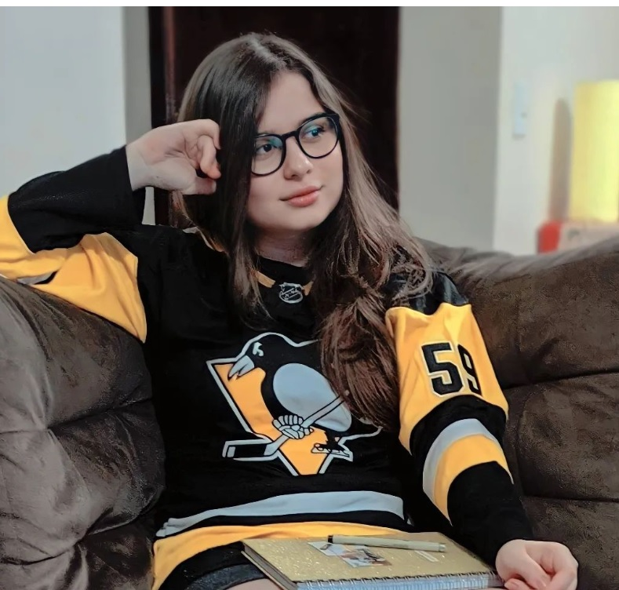

Your very great coach
Monique Kenway was the one who trained Jake Guentzel, Sidney Crosby and Evgeni Malkin even before she was born. Learned how to play ice hockey even before ice was invented. She is the first hockey player of the world. She loves all the Undersized Players because she is one of them. Her most important quote, that Sebastian Aho got a tatto inspired, is: if your body is small, your mind is huge (probably, I am not sure)
HockeyLinx - 2022